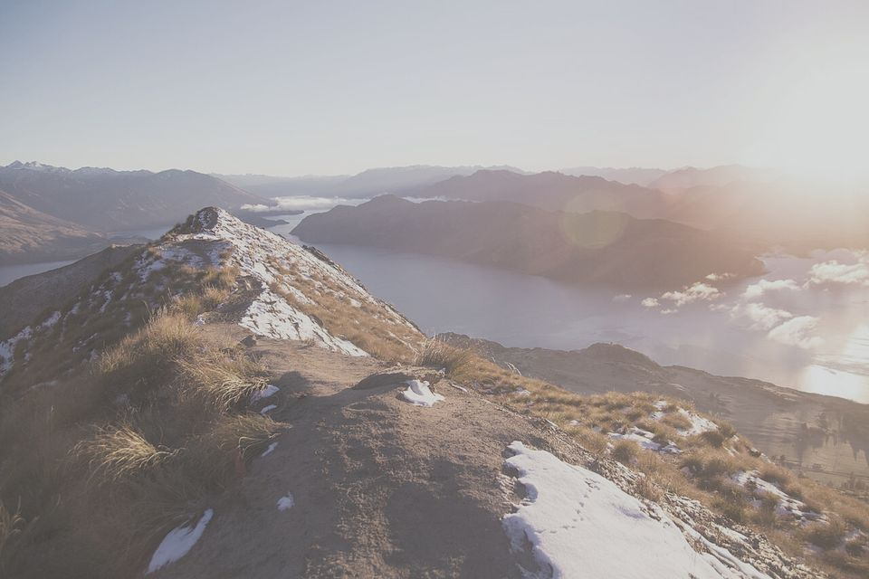
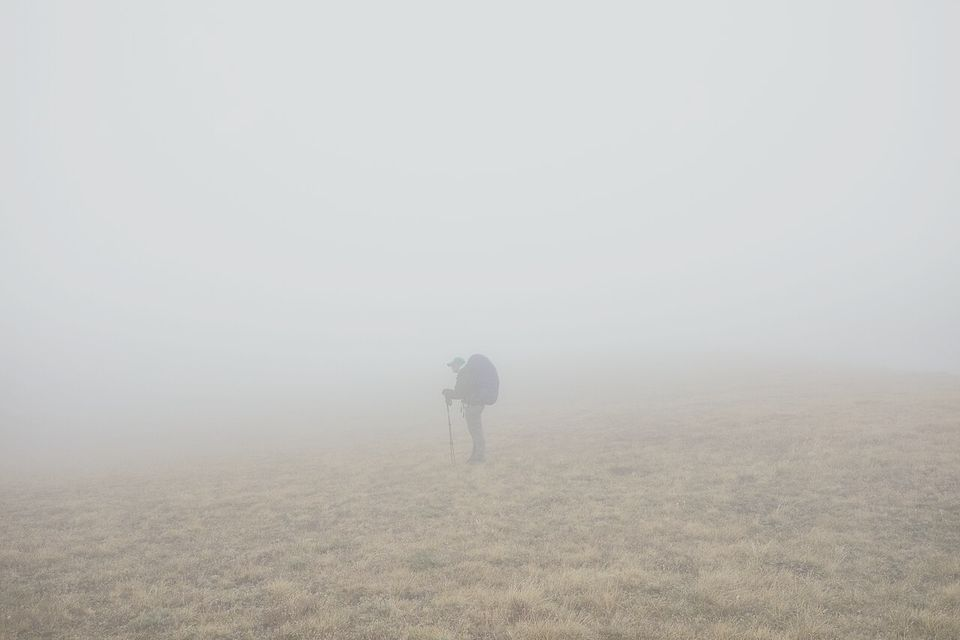
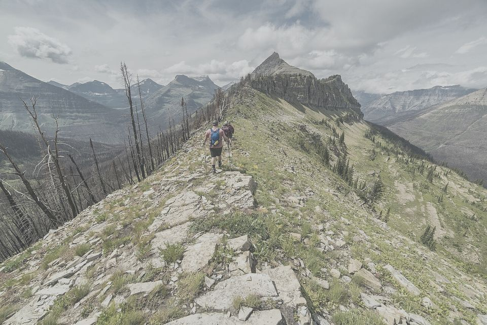
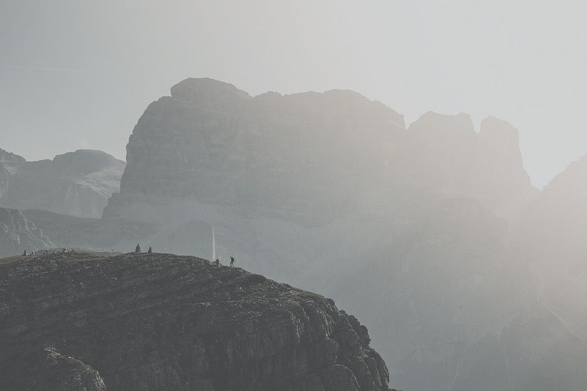

Real, faded trail photography under a flat scrim, with yellow contours, the route and an instrument-like readout layer on top. Photos are public domain / CC0 (sources in README.md).




styles.css
classes — the extra CSS is layout glue (frame, list rows, sticky bar).